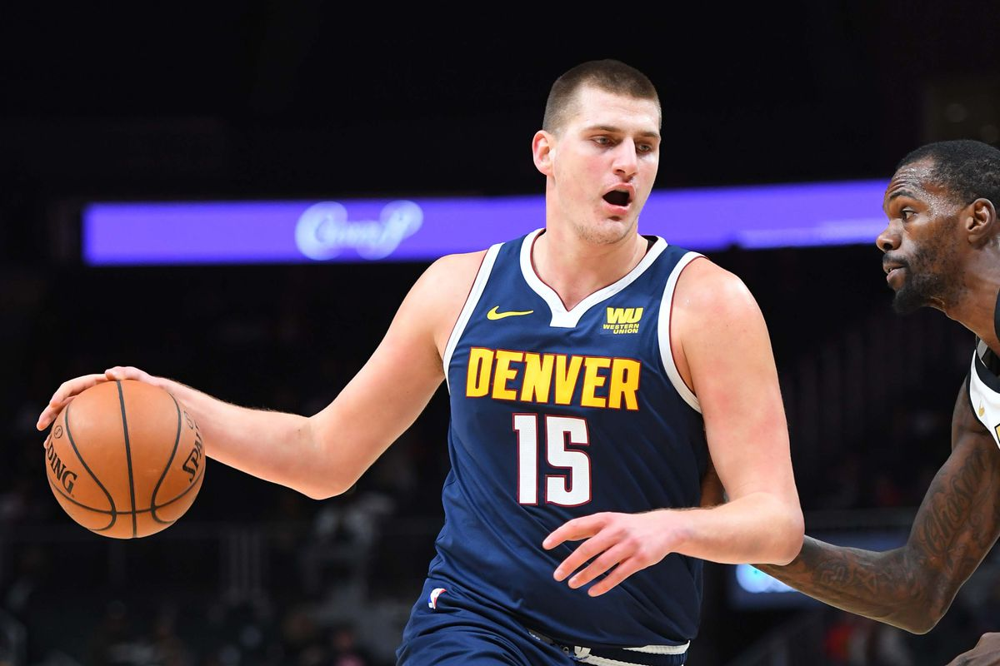
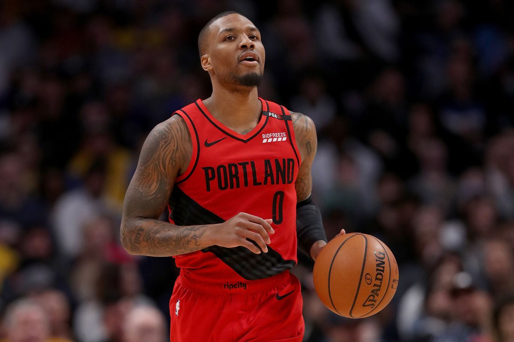
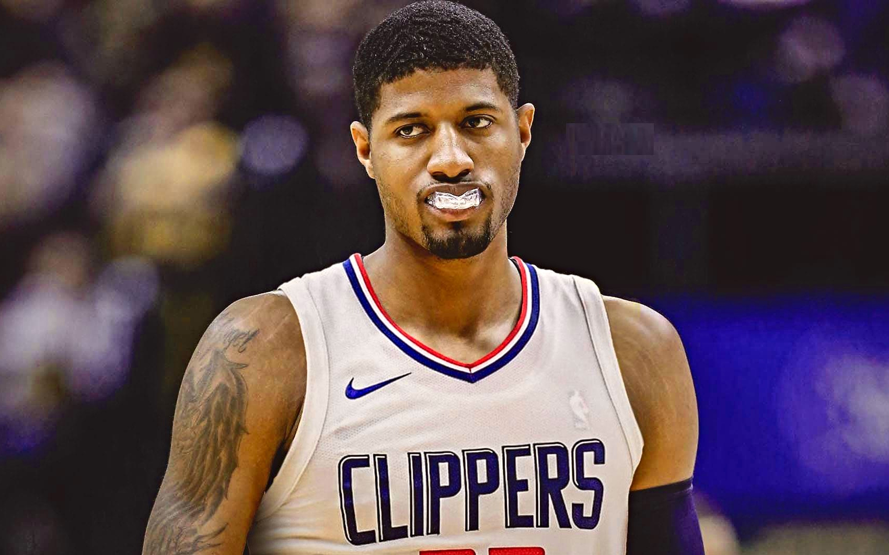
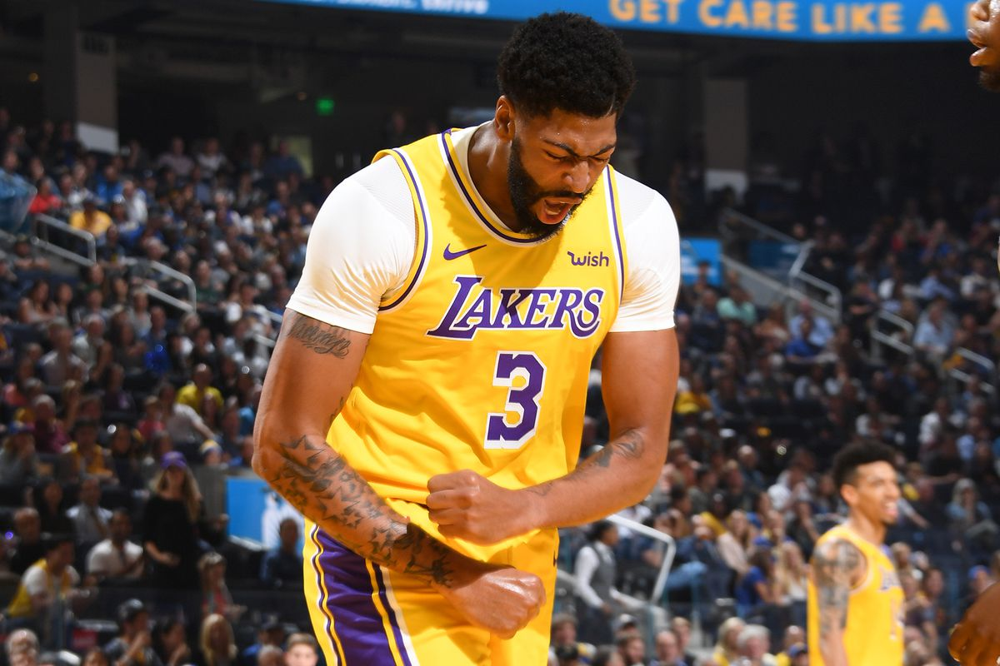
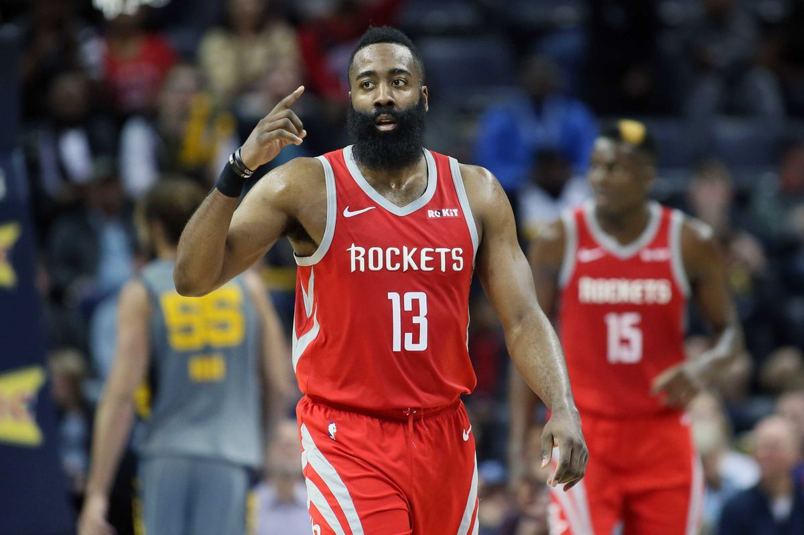

The Joker is one of the best playmaking centers the NBA has ever seen, being able to pass better than a lot of guards. Last year, Jokić was selected to the All-NBA First Team with averages of about 20, 11, and 7.5. In the playoffs Jokić was able to step up big time with some of the best stats in the postseason, averaging 25.1 PPG, 13 RPG, and 8.4 APG. One concern about Jokić’s game is his speed, which wasn’t a significant problem throughout the playoffs. If Denver wants to become a championship contender, it will require Nikola Jokić to take the next step from a superstar to an MVP candidate.
The second best point-guard in the NBA is coming in at number 9. Lillard is an elite scorer with a clutch mindset that allows him to hit buzzer-beater shots. For example, Lillard hit a 37-foot game winner against the Oklahoma City Thunder last year in the postseason, eliminating them from the playoffs. This year, the Blazers will probably make the playoffs with Dame leading the way, but I don’t expect them to be anything too special, as the Western Conference is stacked with talent this year.
PG is coming off a career high year, having the second highest point per game average (28) in the NBA and also finishing third in MVP voting. George is one of the best two-way players in the NBA, being a multiple time All-Star, All-NBA Team player, and also All-Defensive Team player. PG will be playing next to Kawhi Leonard this year on the Clippers. This creates the best defensive duo in the league and also one of the best defensive teams. The Clippers are championship favourites so far, having two superstars and quality role-players.
This offseason, AD was finally released from his imprisonment in New Orleans, being traded to the Los Angeles Lakers, teaming up with one of the greatest players ever, in LeBron James. Davis is the best big man in the league, being able to do it all on offense and defense. One question about Davis is how he will perform in the playoffs. AD has only been to the playoffs twice in his career so far and made it past the first round once, compared to LeBron, who in the same time frame only missed the finals once.
James Harden is one of the deadliest scorers ever. Harden averaged a league high of 36.1 points per game last season! The Beard is a player that you absolutely cannot leave open, from his step-backs to his euro-steps, Harden has a plethora of moves in his bag. Harden will be teaming up with Russell Westbrook this season, creating the best backcourt in the NBA with two former MVPs and also a championship contending team. Harden is already a hall of fame level player, but if he wants to be one of the all-time greats, he will have to win a ring.
